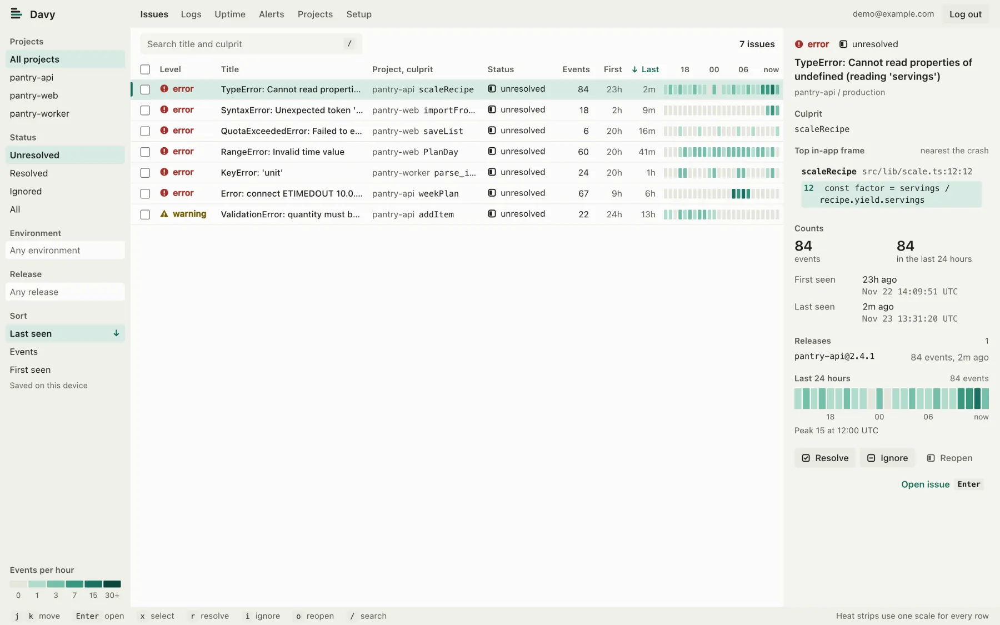

Errors
Davy takes what the official Sentry SDKs send and groups it into issues. An issue reopens when the error comes back in the release that fixed it, or in a release Davy first saw after the fix.
Triage from the keyboard: j and k to move, r to resolve, i to ignore.